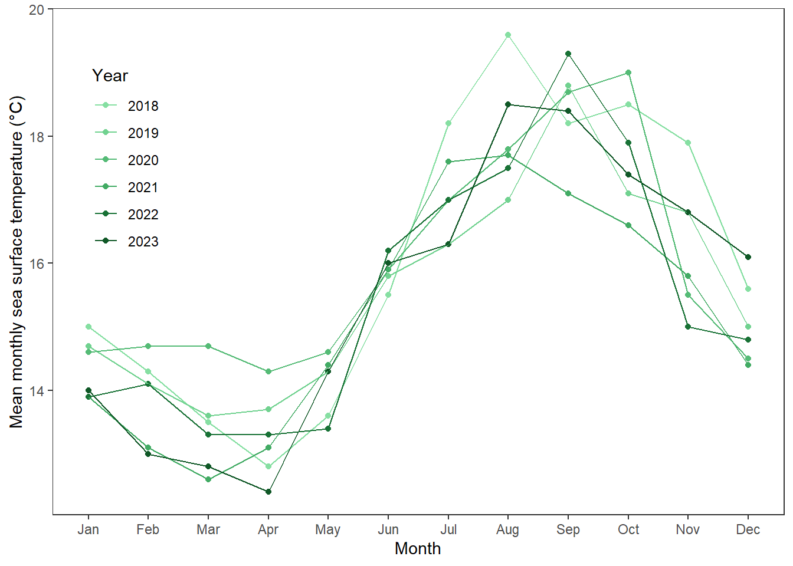

library(tidyverse)
library(here)
library(janitor)Homework 3
Problem 1. Research writing
a.
In part 1, my co-worker used a linear model, likely a test finding the Pearson correlation coefficient based on the continuous values. In part 2, a one-way ANOVA test was likely used, as they are looking for one continuous variable being different between multiple sources.
b.
In part 2, they could have shown us the variances of each source and ran a Tukey’s honest significance test. Showing the variances between the different sources can explain whether the test assumed equal variances or not; if the variances are similar–within four times of each other as a gut test, it would change the perception of the information. A Tukey’s HSD test run after would then tell us which sources were different from each other.
c.
Problem 2. Data visualization
a.
sst <- read_csv("../data/SST_update2023.csv")Rows: 291384 Columns: 5
── Column specification ────────────────────────────────────────────────────────
Delimiter: ","
chr (1): site
dbl (3): latitude, longitude, temp
date (1): date
ℹ Use `spec()` to retrieve the full column specification for this data.
ℹ Specify the column types or set `show_col_types = FALSE` to quiet this message.# data wrangling
sst_clean <- sst |> # starting with the sst data frame
filter(year(date) >=2018) |> # filtering to only include dates with year at or after 2018
mutate(year = year(date), # adding a year column
year = as_factor(year),
month = month(date, label = TRUE), # adding a month column, with letters (Jan) instead of numbers (1)
month = as_factor(month)) |> # making months a factor with 12 variables
group_by(year, month) |> # grouping by month and year to allow data to be summarized
summarize(mean_monthly_sst = round(mean(temp), 1)) # finding the mean sea surface temperatures of every measurement taken in each month in the data frame, rounded to one decimal place`summarise()` has grouped output by 'year'. You can override using the
`.groups` argument.sst_clean |> # starting with the sst_clean data frame
ungroup() |> # ungrouping so that sliced samples are not taken for each year
slice_sample(n = 5) # slicing 5 samples from any five months# A tibble: 5 × 3
year month mean_monthly_sst
<fct> <ord> <dbl>
1 2019 Sep 18.8
2 2022 Oct 17.9
3 2023 Oct 17.4
4 2021 Feb 13.1
5 2020 Jan 14.6str(sst_clean) # looking at underlying data and factorsgropd_df [72 × 3] (S3: grouped_df/tbl_df/tbl/data.frame)
$ year : Factor w/ 6 levels "2018","2019",..: 1 1 1 1 1 1 1 1 1 1 ...
$ month : Ord.factor w/ 12 levels "Jan"<"Feb"<"Mar"<..: 1 2 3 4 5 6 7 8 9 10 ...
$ mean_monthly_sst: num [1:72] 15 14.3 13.5 12.8 13.6 15.5 18.2 19.6 18.2 18.5 ...
- attr(*, "groups")= tibble [6 × 2] (S3: tbl_df/tbl/data.frame)
..$ year : Factor w/ 6 levels "2018","2019",..: 1 2 3 4 5 6
..$ .rows: list<int> [1:6]
.. ..$ : int [1:12] 1 2 3 4 5 6 7 8 9 10 ...
.. ..$ : int [1:12] 13 14 15 16 17 18 19 20 21 22 ...
.. ..$ : int [1:12] 25 26 27 28 29 30 31 32 33 34 ...
.. ..$ : int [1:12] 37 38 39 40 41 42 43 44 45 46 ...
.. ..$ : int [1:12] 49 50 51 52 53 54 55 56 57 58 ...
.. ..$ : int [1:12] 61 62 63 64 65 66 67 68 69 70 ...
.. ..@ ptype: int(0)
..- attr(*, ".drop")= logi TRUEb.
ggplot(data = sst_clean, # starting with the sst_clean dataframe
aes(x = month, # setting x axis as month
y = mean_monthly_sst, # setting y axis as mean sea surface temperature
color = year, # coloring by year
group = year)) + # grouping by year (connects points for each year)
geom_point() + # adding each data point
geom_line() + # connecting points
scale_color_manual(values = c("2018" = "#86dfa2", # coloring 2018 as the lightest green
"2019" = "#71d290", # coloring 2019 as a slightly darker green than 2018
"2020" = "#55bb76", # coloring 2020 as a slightly darker green than 2019
"2021" = "#42ab64", # coloring 2021 as a slightly darker green than 2020
"2022" = "#197236", # coloring 2022 as a slightly darker green than 2021
"2023" = "#105827")) + # coloring 2023 as the darkest green
labs(x = "Month", # labeling the x axis as "Month"
y = "Mean monthly sea surface temperature (°C)", # labeling the y axis
color = "Year") + # relabeling the legend to "Year"
theme_bw() + # using black and white ggplot theme
theme(legend.position = c(0.1, 0.7), # moving legend position to inside graph
panel.grid.major = element_blank(), # removing major lines, which are vertical lines and some of the horizontal
panel.grid.minor = element_blank() # removing minor lines, which are horizontal
) +
scale_y_continuous( # changing the scale of the graph
breaks = seq(14, 20, by = 2), # matching given visualization, with ticks at 14 through 20
limits = c(12.4,19.65)) # manually setting the min and max of the y-axis, adjusting so that '20' is aligned with the top of the graph and the lowest point is appropriately displayed and settled at the bottomWarning: A numeric `legend.position` argument in `theme()` was deprecated in ggplot2
3.5.0.
ℹ Please use the `legend.position.inside` argument of `theme()` instead.
Problem 3. Data analysis
nest_boxes <- read_csv("../data/occdist.csv")Rows: 227 Columns: 10
── Column specification ────────────────────────────────────────────────────────
Delimiter: ","
chr (4): box, box occupant, eventID, repeated use
dbl (6): edge distance, season, sp, cs, e, tm
ℹ Use `spec()` to retrieve the full column specification for this data.
ℹ Specify the column types or set `show_col_types = FALSE` to quiet this message.a.
Biologically, a ‘0’ in either the ‘sp’, ‘cs’, or ‘tm’ columns, means that the box was either unoccupied, or a different bird species occupied the box; a ‘0’ in the ‘e’ column means that the box was occupied by any bird. A ‘1’ in either the ‘sp’, ‘cs’, or ‘tm’ columns means that the box was occupied by one or more of that bird species; a ‘1’ in the ‘e’ column means that the box was unoccupied by any bird.
b.
In the context of this study, Swift Parrots are the target species for occupants of these bird boxes, as they are picky in terms of nesting locations compared to the Common Starling and Tree Martins. Neither species is particularly dominant over the other, but the Swift Parrot has suffered the most due to its selective behavior and requires the most attention in terms of conservation.
c.
The 2016 ‘season’ represents the first year of the study that coincided with a tree blooming event, where the boxes were deployed for the first time at the location. The 2019 ‘season’ represents another tree blooming event, with the boxes left with uncertainty of whether the parrots would return to the same location for nesting.
d.
| Model number | Season | Distance to Forest Edge | Model Description |
|---|---|---|---|
| 0 | no predictors (null model) | ||
| 1 | X | X | all predictors (sat model) |
| 2 | X | Season only | |
| 3 | X | Distance to Forest Edge only |
e.
nest_boxes_clean <- nest_boxes |>
clean_names() |>
select(box_occupant, edge_distance, season, sp)